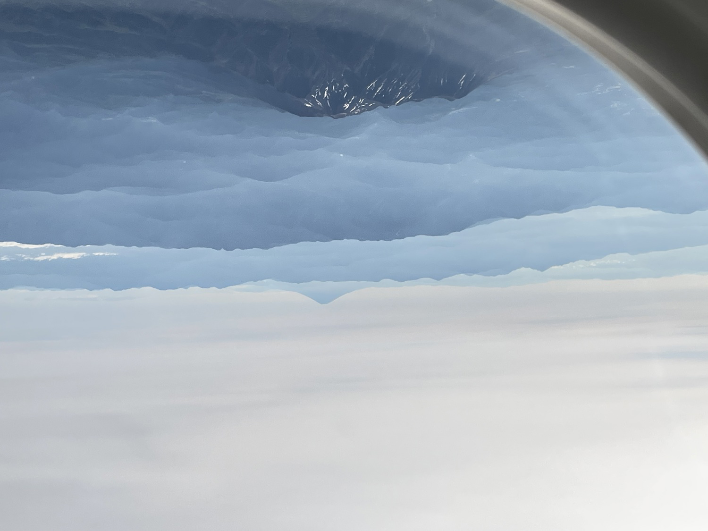
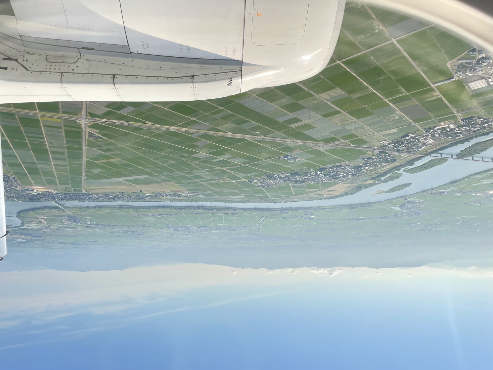
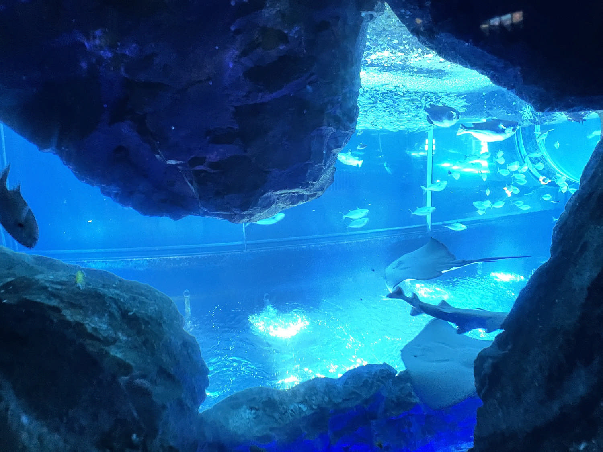
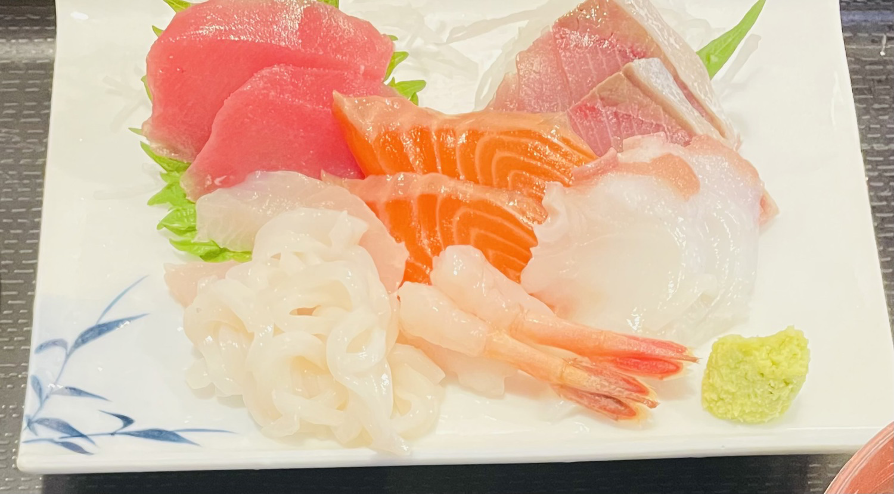
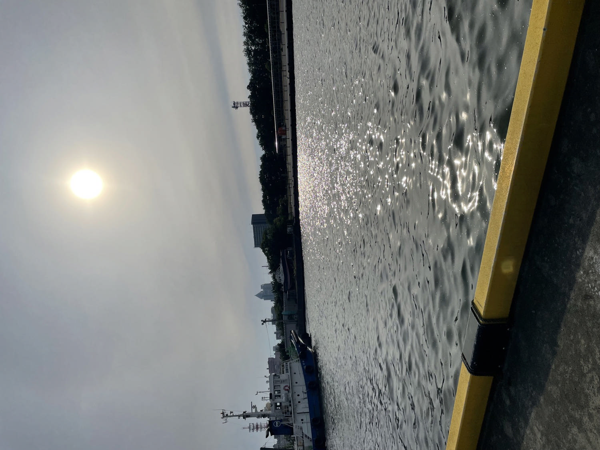
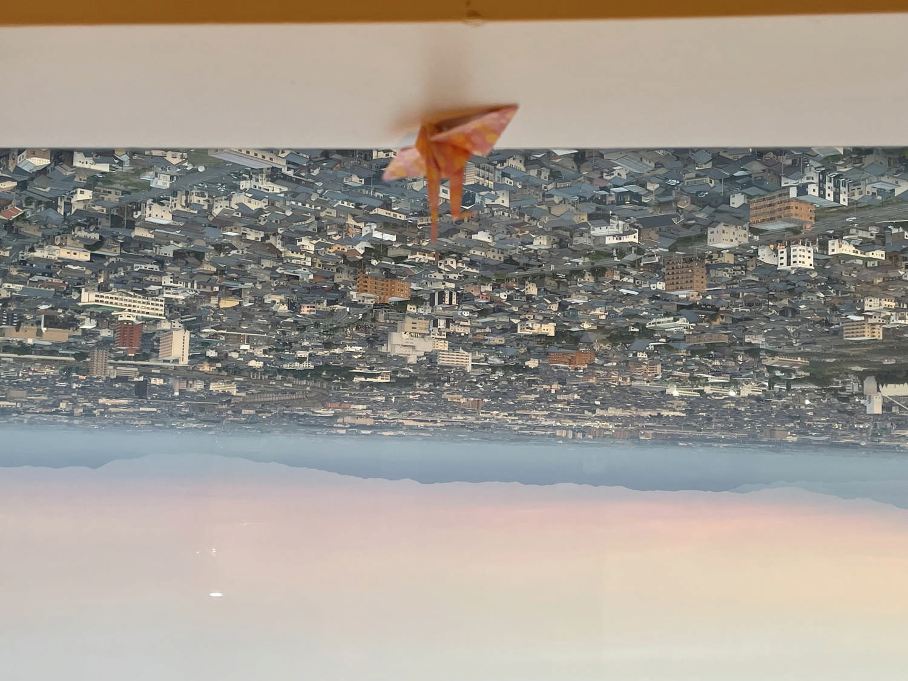

はじめての一泊ひとり旅は、新潟でした。
目的はありません。
ただ、どこかへ旅してみたかっただけ。
朝の飛行機からは、山々の向こう、淡い桃色のグラデーションの空に富士山がぼんやりと浮かんでいました。
こうして私の旅は、淡い桃色の光からはじまりました。
わぁ、新潟行きはこんなふうに富士山が見えるんだ。
「朝早い便のご搭乗ありがとうございます。ただ今、当機は長野県上空です。」
機長さんのアナウンスが聞こえてきました。

長野の空
雲海の向こうに顔を出す富士山
新潟空港が近づいた頃、窓の下には光の道があらわれました。
川の両側に広がる水田は、朝の光にきらきら輝いています。
用事もないのに、こんな朝早く知らない土地の上空にいるなんて、なんだか可笑しいな。
歓迎してくれているみたいな輝く景色の中で、思わず微笑んでしまいます。

新潟の空
J-AIRの飛行機から
新潟空港は、人もまばらでとても静かでした。
こんなに静かな空港は、はじめて。
まるで空港独り占めです。
少し遅い朝ご飯を食べたことだし、水族館へ行こう。
水族館、久しぶりだけれど、どんなところだったかな。
薄暗い洞窟みたいに涼しい水族館。
青い幻想的な水槽には、小さな魚の群れや、ひらひら泳ぐエイが、次々に通り過ぎていきます。

「マリンピア日本海」にて
青の水槽に漂う静かな命の群れ
その柔らかな動き、今朝の光とは違う、静かに揺れる泡の青い光。
その光に包まれると、不思議と心が静まりました。
魚みたいに、静かに柔らかく生きたい。
つやつやのイルカたちがいる屋外には、たっぷりの日差しが降りそそぎ、潮風が私に海の香りをほのかに届けてくれました。
ホテルで荷物をほどいてひと休み。
朝早く起きたからちょっと眠たいな。
このままベッドに転がりたい。
そんな誘惑をなんとか凌いで、少し早い夕飯を食べに、ホテルから歩いて行ける「ピアBandai」という市場へ向かいました。
市場では、佐渡島で採れた大きな乾燥ワカメを買いました。
お味噌汁に入れたら、ここの香りを思い出せるかも知れないから。
それから、市場の中の「港食堂」で、楽しみにしていた夕ご飯です。

港食堂のお刺身
ここで注文した「お刺身定食」は、海藻のお味噌汁と、しっとりと透き通ったお刺身。そして白ごはん。
一緒に頼んだビールを飲み忘れそうなくらい、新鮮なやさしい美味しさが身体にしみていきます。
身体にしみていく美味しいごはんに、今日一日が最高の一日だったような気分になる。 ご馳走さまでした。
ふと見ると、食堂の脇に「無料屋内休憩所」と書いてある案内があります。
お店の裏みたいな細い道。その先に何があるのだろう…
おそるおそるその細い道を進んで行くと、誰もいない、川のすぐ近くの広場に出ました。
目の前の川には、地表に近づいてきたお日様がつくった、光の道が出来ています。
飛行機の窓から見た光の道が、目の前にあらわれたのです。
やっと水の近くに来れた。
水に濡れたうろこみたいなこの輝き。
帰ったら、この光を書き留めたい。

「ピアBandai」にて
光と水が重なり合う港の夕暮れ
ホテルに帰ると、新潟の街が桃色にうっすら染まっていました。
遠くの五頭連峰の裾野には靄がかかっていています。
もう一度今朝の、富士山が浮かぶ淡い空が戻ってきたみたい。
この旅は、淡い桃色の光に始まったけれど、こうして淡い桃色で閉じていく。
あの靄の下には水田が広がっているのかな。
ご飯、美味しかったな。
霞の下に広がる水田を思い浮かべながら、私はさっきのお刺身定食を思い出していたのです。

「ホテル日航新潟」の部屋から
2026.6